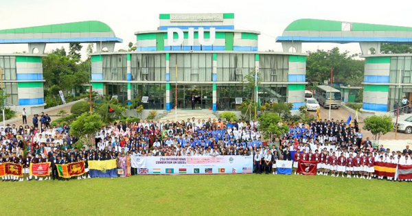

.png)
Admission
We have students coming from different backgrounds, cultures, and nationalities as well. More than 500 international students are enrolled in various programs
Daffodil International University is a private university located in Dhaka, Bangladesh. The original campus is located at Dhanmondi and the permanent campus is located in Daffodil Smart City, Khagan, Ashulia, Savar which is in Dhaka District. It was established on 24 January 2002 under the Private University Act of 1992 which was replaced by Private University Act 2010. According to QS University Rankings: Asia 2021, DIU is a top-ranked private university among all the universities in Bangladesh. DIU placed 1st among universities ranked from Bangladesh in Times Higher Education Impact Rankings 2021. DIU is the first university in Bangladesh to have signed the UN's Commitment to Sustainable Practices of Higher Education Institutions. According to the SCOPUS indexed research publications in 2019, Daffodil International University has been positioned 4th among all universities and 1st among all private universities in Bangladesh.

We have students coming from different backgrounds, cultures, and nationalities as well. More than 500 international students are enrolled in various programs
We are offering 36 undergraduate and graduate programs under 25 departments. Our curriculum is designed to help the students to develop the skills required for 21st-century employment.
We offer affordable tuition fees for students with the option to pay them in multiple installments to create convenience for students.
We make sure all our students get the help they need to complete the degree. Scholarships are available for students with excellent academic results as well as for the students who are struggling financially.